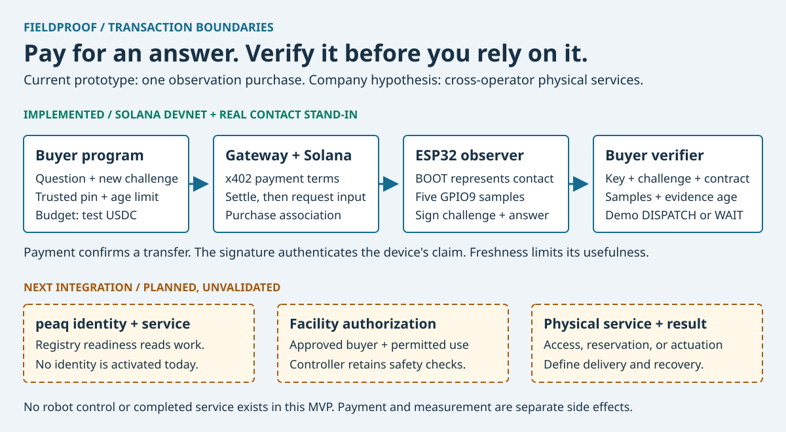

Pay for an answer.
Verify it before
you rely on it.
FieldProof tests how machines can buy and verify services from infrastructure another operator owns. The current prototype purchases one fresh contact observation.
Start here. Learn one transaction. Run the three rehearsal stages. Explain the result without notes.
The receipt link needs the local simulator. The exported guide links its standalone inspector. This guide never measures hardware or sends funds.
A visiting robot needs an answer from someone else's gate.
A fleet operates the robot. Another operator owns the facility. The robot needs a current contact answer before its next decision.
Payment records money movement. A device signature authenticates the reported answer. The buyer's freshness limit determines whether that answer remains useful.
Current result: a real Solana Devnet payment followed a quote and preceded a real ESP32-signed observation. Independent buyer checks accepted it.
BOOT represents the contact. This prototype buys an observation. Access rights, gate control, safe robot motion, and completed-service evidence remain separate.
A second independent facility tests integration reuse. Paid integration and support come first. Customer demand and pricing remain unvalidated.
Say the story in your own words
Describe the visiting robot, the external operator, and the missing current answer. Show the payment, signed answer, and acceptance checks.
Explain the next pilot: one actual incident, the existing workaround, operator permission, useful-time limit, and buyer budget.
Open-RMF and machine-service markets already exist. The proposed edge is independent buyer acceptance of physical evidence under explicit transaction terms.
Follow one observation purchase.
Select each step. The actual purchase happens in this order. This panel explains the flow and executes no transaction.
The buyer defines the answer it will accept.
It selects the device and trusted public key, the contact question, a 0.001 Devnet USDC budget, and a ten-second freshness limit.
A new nonce identifies this question. Discovery cannot replace the trusted device key.
The receipt signs the challenge and observation. The gateway ledger associates that challenge with its purchase. Payment and delivery are not atomic.
Explain the four buyer checks
- Identity: does the signature match the public key the buyer already trusts?
- Challenge: does the answer match the exact question and its new nonce?
- Contact contract: does the selected input report five matching samples?
- Freshness: does the measurement fit the buyer's useful-time window now?
Accepted OPEN produces the demo recommendation DISPATCH. CLOSED or unacceptable evidence produces WAIT. Neither outcome controls a robot.
Where peaq fits
The intended peaq role is operator, machine, key, and service registration with honest activity history.
Agung reads and offline public identity inputs work. No identity or activity event is activated.
The current buyer trust root remains its independently provisioned public key. A registry entry alone cannot establish truthful sensing.
Run the demo in three stages.
Prerequisites: Python 3.10+, uv, and Node.js 22.13+. The existing ESP32 already has firmware. You do not need to flash it.
uv sync --project host
npm --prefix gateway ci
python3 scripts/demo.py checkExpected result: three PASS lines. This prerequisite check uses no radio and moves no funds.
Learn the purchase and expiry first.
python3 scripts/demo.py sim- Open
http://127.0.0.1:4022. - Select Get payment quote.
- Select Run simulation.
- Check OPEN and DISPATCH.
- Wait eleven seconds. Check expired WAIT.
Simulated payment and simulated contact. No funds move. No device supplies this answer.
Rehearse a simulated closed contact
Stop this server with Ctrl+C. Run python3 scripts/demo.py sim --closed. A new simulated purchase returns CLOSED and WAIT.
Measure the existing board.
Plug in the ESP32. Close other BLE scans. Release BOOT. Do not press Reset.
python3 scripts/demo.py board --expect openExpected result: one PASS, device-signed OPEN, and DISPATCH. The command records one bounded BLE check without payment.
Hold BOOT before the next command. Keep it held until the result appears.
python3 scripts/demo.py board --expect closedExpected result: one PASS, device-signed CLOSED, and WAIT. Release BOOT after the check.
Show real input in the browser
python3 scripts/demo.py physicalOpen http://127.0.0.1:4023. This separate port can run beside the no-hardware simulator.
Hold BOOT. Create a quote and select Run simulation. Check CLOSED/WAIT. Release BOOT and repeat with a new quote.
The contact is real. The payment is simulated. Create each new quote only after the preceding observation finishes.
GPIO9 is a boot strap. Holding BOOT during reset can enter download mode. This launcher never flashes or drives the LED.
Verify the actual paid receipt.
With the simulator running, open the focused receipt inspector.
- Check VALID signature, MATCHES challenge, 5/5 AGREE, EXPIRED, and WAIT.
- Select Flip contact state. Check REJECTED signature.
- Select Change challenge. Check REJECTED binding.
- Select Use another key. Check REJECTED signature.
- Select Verify original. Check VALID and expired WAIT.
- Select Show full page for the payment query and both signed BOOT states.
Verify recorded payment performs a read-only Devnet RPC query. It never pays again or refreshes the measurement.
This scene uses an actual recorded test-USDC payment and a real recorded device receipt. The evidence is old and remains WAIT today.
If RPC returns NOT VERIFIED, state that the current query failed. Use the recorded evidence and local signature checks.
If a command stops, recover without guessing
| Symptom | Next action |
|---|---|
| Port unavailable | Use the existing demo. Stop a server only in its own terminal, or select another --port. |
| ESP32 unavailable | Check power and laptop Bluetooth. Close other scans. Use recorded evidence while you inspect the radio failure. |
| Expected CLOSED, received OPEN | Hold the correct BOOT button before the next check. Do not press Reset. The failed check remains recorded. |
| Invalid signature or changed pin | Stop. Verify the provisioned device and trusted pin. Never trust a discovered key to make the result pass. |
| Real settlement or delivery failed | Preserve the purchase ID. Review payment before another purchase. Automatic refunds do not exist. |
The launcher never retries a failed board check or substitutes simulated input.
What actually crosses the radio?
Payment and web requests
HTTP carries the quote and payment protocol. Internet access supports actual Devnet settlement and optional RPC verification.
The ESP32 does not submit a Solana transaction. Gateway software handles the payment flow.
Physical input and signed answer
Bluetooth Low Energy, or BLE, carries the request and receipt. USB supplies power and supports firmware/provisioning work.
The sensor question does not travel through the USB cable during this BLE demo.
- The board advertises its name and the CapMesh service UUID
0xCB00. - Python uses Bleak to scan and connect. It reads the manifest at
0xCB01. - Python subscribes for receipt notifications and writes request JSON to
0xCB02. - The board checks command authorization and replay state. It samples GPIO9 and signs the answer.
- The board signals receipt availability at
0xCB03. Python always reads the complete receipt. - The buyer checks the pinned identity, challenge, contact contract, and freshness.
A UUID names a BLE service or characteristic. A characteristic is a readable or writable value in a BLE connection.
The firmware uses Espressif's NimBLE stack. The laptop uses its operating system Bluetooth adapter through Bleak.
Current topology: direct laptop-to-board communication. No mesh routing, board-to-board relay, or automatic city-wide propagation exists.
How Wi-Fi differs
The board also hosts its open CAPMESH_96A2 access point. Connect the laptop to that network before device HTTP calls.
Device HTTP uses GET /manifest, POST /invoke, and GET /receipt at http://192.168.4.1.
BLE and HTTP use the same dispatcher, signing key, and replay table. Switching transports does not change the evidence contract.
uv run --project host capmesh observe-demo --http-url http://192.168.4.1A VPN can overlap the board subnet. The Wi-Fi runbook documents explicit interface selection.
Keep BLE for the timed demo. Joining the board access point can remove the laptop's normal internet path.
Explain command authorization versus receipt identity
A public demo HMAC authenticates commands. It provides no private service authorization.
The gateway enforces payment before its measurement request. The board does not verify Solana payment or prevent another nearby demo-key caller from measuring.
A separate persistent P-256 device key signs physical receipts. The buyer's trusted public key verifies that signature.
The key resides in unencrypted nonvolatile storage. Physical extraction remains possible. The device also lacks an independently trusted clock.
Implementation: host/capmesh/transport/ble.py, firmware/esp32/main/transport/ble_transport.c, and http_transport.c. Espressif NimBLE documentation.
Good evidence also needs a useful answer.
These examples explain the eight signed-fixture scenarios. This panel runs no verifier. Run the command below for actual software checks.
Both configured answers match their challenges, verify under distinct pinned keys, and report fresh, stable OPEN.
python3 scripts/demo.py casesExpected result: SIMULATED SIGNED FIXTURES. Only fresh OPEN produces DISPATCH. The other seven final outcomes remain WAIT.
Two temporary signing keys exercise software verification. No two physical boards participate. Distinct keys do not establish independent sensing.
What can this apply to, and how many devices work today?
| Scope | Demonstrated | Next gate |
|---|---|---|
| One ESP32 contact | BLE, Wi-Fi, signed input, held/released BOOT, and one paid observation | Authorized external contact fixture and installation checks |
| Two observers | Signed-fixture policy and bounded concurrent BLE collector software | Two provisioned physical boards, collection timing, disagreement, and independent sensing |
| More devices or facilities | No physical capacity benchmark. The payment endpoint selects one provider per purchase. | Provider routing, permissions, adapters, load measurements, and operator recovery |
| Gate → dock → charger → elevator | Expansion hypothesis, not implemented services | A separate physical contract, controller adapter, permissions, and delivery economics for each service |
| Android phone or laptop sensors | Phone camera/judge browser and laptop buyer/gateway. No phone-sensor observer. | New sensing contract, permission checks, signing identity, and physical verification |
The firmware configures up to four Wi-Fi stations. This is an access-point setting, not a paid-device capacity test.
What the reliability results mean
The completed earlier overnight baseline recorded 119 passes and one discovery miss out of 120 scheduled checks.
The next scheduled sample recovered. The underlying radio or operating-system cause remains unverified.
One successful sample or a unit-test count cannot establish every environment, radio range, service uptime, or safe motion.
Your next day has one rehearsal and one submission path.
- Learn the transaction. Explain who pays, who observes, who signs, and who accepts. Use the six-step panel.
- Run the three stages yourself. Show simulated expiry, a real BOOT reading, and recorded receipt attacks. Keep the technical video as the fallback.
- Complete the human fields and public links. Verify Germany registration, project URL, team contact, test access, video access, and the submission receipt.
Use the phone for one continuous shot of BOOT and the laptop. Label the physical stand-in. Another sensor type remains outside this deadline's scope.
The later peaq gate is explicit operator/key/service registration and a reviewed activation decision. The later company gate is one buyer incident and budget.
Human submission fields · Optional parts and physical gates · Buyer, alternatives, and commercial test
Test your understanding without notes
- Why does a Solana payment signature not authenticate the sensor answer?
- Which link uses Bluetooth, and which link needs the internet?
- Why does an authentic OPEN receipt expire?
- Where does the buyer get its trusted public key?
- What happens when payment succeeds but the board disappears?
- Which parts work today, and which parts remain a pilot hypothesis?
Explain the answer before opening the detailed reference. If a point stays unclear, revisit that transaction step.
Open the detailed technical reference
Use this only when you need protocol fields, payment states, source files, or historical evidence.
- Detailed explanation
- Practice the demonstration and explain it
- What this MVP demonstrates
- Advanced commands
- Anatomy of one purchase
- Architecture
- The wire protocol
- Payment and recovery
- What the device does
- Verified results
- Test suites
- Build history
- Threat model and limits
- Five-minute demo script
- Repository map
- Deadlines and open items
Understand the product
The company hypothesis
A fleet operates a robot. A separate company operates the gate, dock, or charger it needs. Their software needs agreed terms, permission, payment, and evidence.
The buyer hypothesis is one reusable service integration across independent facilities. The provider hypothesis is controlled service access and accountable delivery to approved buyers.
The current MVP purchases an observation. Access permission, gate control, reservations, and completed-service verification remain future work.
This buyer pays for the observation before measurement. A future access purchase needs separate readiness, reservation, delivery, and recovery terms.
Start with one fleet and one authorized facility. A second independent facility tests whether the buyer can reuse its integration.
The product strategy owns this story, pricing options, alternatives, and the pilot acceptance target.

One buyer, one operator, one immediate decision
Example: a delivery robot reaches an access point operated by another company. Its controller needs the current gate-contact state.
The operator permits sale of that observation. The buyer pays for one answer. Its controller decides whether that answer helps the next action.
This is the product hypothesis. We have no robot customer or installed gate. Our ESP32 button represents the contact.
A ten-second answer fits a nearby decision. It cannot predict gate state after a long trip. It also cannot grant access permission.
What each part does
| Part | Plain explanation |
|---|---|
| Buyer | The program that needs an answer. It sets the question, price limit, trusted device, and useful-time window. |
| Gateway | The operator's service desk. It creates the quote, checks payment, contacts the board, and stores the result. |
| Solana Devnet | The payment test network. A public transaction records a transfer of test USDC. These funds are not business revenue. |
| ESP32-C6 | The observer. It reads BOOT on GPIO9 five times and signs its answer with its persistent private key. |
| Buyer verifier | A separate program that checks the signature, exact question, measurement contract, and age before it accepts the answer. |
| Controller | The future robot's control software. It retains access permission and motion-safety checks. The MVP contains no vehicle controller. |
All software roles run on one laptop in this demonstration. Separate roles establish verification boundaries. They do not demonstrate separate commercial operators.
Why pay with x402?
402 Payment Required is an HTTP response. HTTP is the request protocol your browser uses.
The x402 protocol adds machine-readable payment terms. A compatible buyer checks those terms, signs a constrained transaction, and retries the request.
The facilitator verifies and submits the payment. The gateway reads the sensor only after successful settlement.
Our paid buyer permits Solana Devnet USDC, one merchant, and a maximum payment of 0.001 USDC. It needs no checkout form.
An ordinary authenticated API remains an alternative. x402 supplies per-request payment terms for compatible buyers. A pilot must establish whether that helps these operators.
Why sign the answer?
The device keeps a private signing key. The buyer stores its matching public key, called an identity pin.
A valid signature ties the reported fields to that private key. The gateway cannot change the contact state without invalidating the signature.
The buyer installs its pin through trusted provisioning. Accepting any public key advertised by a provider defeats this identity check.
A signature does not certify wiring, location, truthful firmware, or permission. Physical key extraction remains possible because device storage is unencrypted.
Why use a challenge and an expiration?
The buyer supplies a new nonce: a number that identifies this question. The device signs that nonce with the answer.
An earlier answer cannot answer a different challenge. A matching answer also needs a recent measurement time.
The device clock starts from an authenticated host request. This prototype checks that time against the buyer clock. It lacks independent time attestation.
Five matching samples show short-term agreement from one input. They are not five independent observers or a calibrated probability of correctness.
What changes with two observers?
The optional pair policy requires two configured device identities to report fresh, stable OPEN. Any missing, conflicting, stale, invalid, skewed, or replayed evidence produces WAIT.
Both receipts use one evaluation time. The pair expires when its oldest observation or earliest request expires.
Two valid signatures can disagree. They identify the reporting keys, not an independently verified physical truth. Two sensors can also share one wiring fault.
Run uv run --project host capmesh corroborate-demo --scenario all to explore eight explicitly simulated signed-fixture scenes. It uses no hardware and moves no funds.
The paid demonstration still uses one board. See the pair policy and physical acceptance gates before claiming two-board operation.
Why can authentic evidence still produce WAIT?
The recorded purchase really settled, and its device signature remains valid. Its ten-second decision window expired.
Replaying the receipt or verifying the chain cannot refresh that window. A new decision needs a new observation.
DISPATCH means the demo accepts fresh OPEN evidence. It does not mean the robot has permission or a safe path.
What happens if payment succeeds and delivery fails?
The gateway preserves the payment and marks delivery_failed. An operator must review the failure and any refund.
The payment and sensor response do not share an atomic transaction. A blockchain payment alone does not prove delivery.
A retry returns the stored answer if delivery completed. It never silently purchases another answer or resets the evidence timestamp.
Where does peaq fit?
The proposed peaq role is the observer's registered identity and honest service history. Solana remains the demonstrated observation-payment rail.
The current Agung diagnostic reads the published machine registry and computes an ID from the public device pin. It does not activate a machine.
It also checks ownership at the same finalized block. The recorded proposed ID was absent. Absence reserves nothing and grants no ownership.
An activated identity can later connect an operator, verification method, and service endpoint. Registration alone cannot certify sensor truth or installation.
See the peaq integration decision for measured readiness, remaining inputs, and the documented Solana-onboarding limitation.
What creates a durable business?
The unvalidated opportunity is repeated physical-service use across operator boundaries. The first observation tests only the evidence-purchase step.
Existing infrastructure solutions matter. Open-RMF already connects robot fleets, doors, elevators, and building systems.
FieldProof must establish an additional commercial problem around terms, payment, permitted evidence, and failure recovery. Open-RMF
Start with one buyer incident. Identify the missing fact, current alternative, useful-time window, operator permission, and cost of a wrong decision.
Then test repeated delivery and a real budget. Query counts and a test-token transfer do not justify installing a sensor fleet.
Future advantages depend on authorized supply, useful coverage, reliable delivery, and repeat customers. The MVP establishes none of those commercial results.
What this MVP demonstrates
It buys one physical observation
The market is one observation of one contact at one location, priced at 0.001 Devnet USDC. The buyer pays before the sensor is read. The sensor is read only after the payment succeeds.
The evidence carries its own question
Every receipt is bound to the challenge nonce, device, location, metric, and time that produced it. An old answer cannot satisfy a new challenge. A changed answer fails its signature.
Failure is a state, not an exception
The gateway persists seven purchase states in SQLite. A crash during settlement or measurement leaves a reviewable state. Nothing retries an external side effect automatically.
Three independent implementations must agree
Firmware C, host Python, and buyer JavaScript implement the same receipt message. The physical and browser checks exercise their agreement on recorded device signatures.
The honest claims are written down
The product does not claim occupancy sensing, location attestation, calibrated confidence, or independent corroboration. The limits are in the docs, not hidden.
It runs with no hardware at all
A reviewer with Python and Node can execute the adversarial loop and simulated payment gate. Setup time depends on installed prerequisites.
DISPATCH is a demo recommendation over one contact.Run it yourself
Prerequisites for every mode: Python 3.10+, uv, and Node.js 22.13+ with built-in node:sqlite. Firmware work additionally needs ESP-IDF 6.1 and esptool 5.4.
| Mode | Command | Port | Payment | Contact |
|---|---|---|---|---|
| CLI adversarial loop | uv run --project host capmesh observe-demo --simulated | — | mock budget | simulated |
| CLI closed contact | uv run --project host capmesh observe-demo --simulated --closed | — | mock budget | simulated |
| Two-observer policy | uv run --project host capmesh corroborate-demo --scenario all | — | none | signed fixtures |
| CLI real hardware | uv run --project host capmesh observe-demo | — | mock budget | ESP32 via BLE |
| Browser simulator | cd gateway && npm run demo | 4022 | fake facilitator | simulated |
| Browser + real contact | cd gateway && npm run demo -- --physical | 4022 | fake facilitator | ESP32 via BLE |
| Real payment gateway | cd gateway && npm start | 4021 | Solana Devnet USDC | ESP32 after settlement |
Run one mode at a time for your rehearsal. The current signed-receipt walkthrough inspects recorded payment evidence and executes browser verification.
Step by step — no hardware
Start at the repository root. Use a second terminal for tests while a gateway runs. Stop it with Ctrl+C before changing modes.
- Install the Python environment
uv sync --project host - Run the adversarial CLI loop
uv run --project host capmesh observe-demo --simulatedWatch it reject a cheaper stale provider, a replayed answer, a changed answer, and a replayed device request. It also records served and unmet demand. - Install the gateway
npm --prefix gateway ci - Start the browser simulator
npm --prefix gateway run demo - Open the dispatch desk
http://127.0.0.1:4022Select Get payment quote to see the 402 response. Then select Run simulation. Wait eleven seconds to watchWAITappear when evidence expires. - Rehearse the closed stateStop the open simulator first.
npm --prefix gateway run demo -- --closed - Run every software test
uv run --project host pytest -qnpm --prefix gateway test
Step by step — with the ESP32
Start at the repository root. The attached board already runs the verified firmware. Rehearsal needs no flash.
For another board or a replaced key, complete trusted identity provisioning first. The checked-in pin identifies our demonstration board.
- Close other BLE scansLive mode fails when the board is busy. It never substitutes simulated hardware.
- Build only when firmware changesActivate the environment created by your ESP-IDF installer.
(cd firmware/esp32 && idf.py build)Espressif Installation Manager createsactivate_idf_v6.1.sh. The standard installer uses"$IDF_PATH/export.sh". Follow the provisioning runbook for flashing. Keep BOOT released during reset or flashing. - Confirm the observation path
uv run --project host capmesh observe-demoCheckevidence_mode: physical-contact-demoandsample_agreement: 5/5. - Browser with real contact
npm --prefix gateway run demo -- --physical - Prove both statesHold BOOT while you run the observation. Check
CLOSEDandWAIT. Release BOOT, create a new quote, run another observation, and checkOPENandDISPATCH. - Run the hardware suite
uv run --project host pytest -q --hardware
Alternative transport: connect to the board's CAPMESH_96A2 access point and pass --http-url http://192.168.4.1. On Linux with overlapping VPN routes, add --http-interface with your Wi-Fi interface name.
Step by step — real Devnet payment
Start at the repository root. Keep the gateway in one terminal and run the buyer in another.
- Start the Devnet gateway
npm --prefix gateway startBinds to127.0.0.1:4021. Offers x402 V2exactpayment for 1,000 base units of Devnet USDC. - Fund a disposable buyerUse a throwaway Solana CLI keypair and the Devnet faucet. Never use a funded mainnet keypair.
- Pay and verify
node gateway/buyer.js /path/to/disposable.keypair.jsonThe client rejects other networks, other assets, other recipients, and any amount above 0.001 USDC. It prints no key material. - Check the chain yourselfSearch the printed transaction signature on Devnet before you claim an on-chain result.
Anatomy of one purchase
This is the whole product in ten steps. Each step names the file that owns it.
- The buyer creates an immutable challenge
gateway/server.js · POST /requestsA positive 32-bit nonce becomes part of a stored purchase ID. The challenge cannot be edited after creation. - The buyer asks for the observation URL
GET /observe/:idreturns402 Payment Requiredwith the exact amount, network, asset, and recipient. - The buyer refuses a changed contract
gateway/buyer.jsBefore any money moves, the client re-reads the quote. If the gateway widened the freshness limit, moved the location, changed the endpoint, or raised the price, the purchase stops here. - The buyer signs and settlesThe x402 V2 SDK and Solana Kit build the transaction. The gateway verifies, reserves a unique proof, and settles on Devnet.
- The gateway marks the purchase as measuring
gateway/store.jsAn atomic reservation movesquotedtosettlingbefore settlement. Successful settlement then moves it tomeasuring. - The device authenticates the request
firmware/esp32/main/protocol/capmesh_dispatcher.cIt rebuilds the canonical request string, checks the HMAC, checks the expiration, and checks the replay table. Rejection returnsAUTH_INVALID,AUTH_EXPIRED,NONCE_CACHE_FULL, orBUSY. - The device samples GPIO9 five times
firmware/esp32/main/capabilities/contact_capability.cRoughly 10 milliseconds apart.closed=truemeans GPIO9 reads low.stable_samplescounts samples that match the first sample. - The receipt is signed and returnedThe device signs the canonical observation string with ECDSA P-256 and SHA-256. The
v3:receipt fits a 512-byte BLE characteristic. - The buyer verifies the receipt
gateway/buyer.jschecks the pinned signature, buyer challenge, contact contract, and age. Failure stops the paid buyer. - The buyer derives the decisionOpen plus fresh plus authenticated produces
DISPATCH. Closed, missing, stale, replayed, or invalid producesWAIT. Confidence staysnull.
Where the flow deliberately breaks
| Failure | Stored state | What the system does |
|---|---|---|
| Settlement throws or times out | settlement_unknown | Preserved for review. No automatic repetition of the payment. |
| Facilitator returns an error | payment_failed | No measurement happens. The buyer keeps the purchase ID in its error. |
| Payment succeeded, device unreachable | delivery_failed | The settled transaction is preserved for refund review. Automatic refunds do not exist. |
| Crash during measurement | measuring | Preserved. Inspect device logs. Never settle again for this purchase. |
| Client loses the connection | unchanged | The next call to the same purchase returns the original receipt without a second settlement. |
Architecture
Components
| Component | Responsibility | Source |
|---|---|---|
| Contact capability | Sample GPIO9 without driving the boot strap | firmware/esp32/main/capabilities/contact_capability.c |
| Dispatcher | Authorize, serialize transport access, protect replay state, sign receipts | firmware/esp32/main/protocol/capmesh_dispatcher.c |
| Transport | Carry the same request and receipt over BLE or HTTP | host/capmesh/transport/, firmware/esp32/main/transport/ |
| Observation contract | Pin metric, location, budget, and freshness | host/capmesh/observations.py |
| Rehearsal market | Try candidates by price, reject stale evidence, record demand | host/capmesh/market.py |
| Gateway | Enforce x402 verification and settlement before measurement | gateway/server.js |
| Purchase ledger | Prevent duplicate settlement and preserve failure states | gateway/store.js |
| Paid buyer | Limit Devnet spending and check the receipt independently | gateway/buyer.js |
| Dispatch desk | Show quote, evidence, decision, age, limits, and demand | docs/overview.html |
Trust boundaries
- A manifest cannot establish its own identity. The buyer pins the device ID and P-256 public key through trusted USB provisioning.
- Physical observation receipts use the persistent private device key. The buyer rejects substitution with the public demo HMAC.
- Command authorization, simulated receipts, and legacy LED checks retain public demo HMAC. Command authorization is not private access control.
- The private device key resides in unencrypted NVS. Production needs protected storage and firmware integrity.
- The device timestamp derives from an authenticated host request and uptime. It is not independent time attestation.
- The receipt establishes what this firmware reports about its GPIO samples. It does not establish external physical truth.
The wire protocol
Envelope capmesh/0.1. Capability state.observe. Provisioned metric gate.closed. Provisioned location demo-gate. Sensor gpio9-contact.
Request
{
"protocol": "capmesh/0.1",
"request_id": "obs-00000001",
"device_id": "esp32-c6-96a2",
"capability": "state.observe",
"parameters": {"location": "demo-gate"},
"nonce": 1,
"timestamp": 1790807040,
"expiration": 1790807070,
"authorization": {"type": "hmac-sha256-v2", "token": "64-lowercase-hex-characters"}
}
| Field | Rule |
|---|---|
request_id | 1–16 ASCII letters, digits, hyphens, or underscores. |
nonce | Integer from 1 to 2,147,483,647. Fractional JSON numbers fail validation. |
expiration | Follows timestamp by at most 300 seconds. |
| Location | Only the single provisioned location is accepted. |
The two canonical strings
Both sides must produce byte-identical UTF-8 messages. Field names are replaced by values. Integers are decimal with no padding. JSON field order does not matter.
fieldproof-auth-v1|request_id|device_id|state.observe|location|nonce|timestamp|expiration
fieldproof-observation-v1|protocol|request_id|provider|capability|location|nonce| metric|sensor|closed|stable_samples|total_samples|started_at|completed_at
closed is encoded as 0 or 1. Physical receipt signatures use v3: plus padded base64 of the 64-byte r || s P-256 signature. Simulated receipts retain v2: HMAC and simulated-contact. See the canonical protocol and identity provisioning.
The buyer acceptance rules
| # | Check | Rejects |
|---|---|---|
| 1 | The provider key exists in buyer configuration | An unknown or rogue provider |
| 2 | Protocol, request ID, provider, capability, nonce, and location match the challenge | A receipt that answers a different question |
| 3 | The receipt authenticator matches the observation fields | Any changed result or forged proof |
| 4 | Sensor and metric match the contact contract | A substituted sensor or metric |
| 5 | All five samples agree and the state is a JSON boolean | Unstable evidence |
| 6 | Measurement starts after the challenge, with at most two seconds of clock tolerance | Evidence from before the question |
| 7 | Completion follows start and is not more than two seconds in the future | Impossible timestamps |
| 8 | Evidence age fits the contract. The Python verifier also checks request expiration. | Stale or expired evidence |
| 9 | The Python verifier refuses a consumed provider and nonce pair. | A replayed response in that verifier session |
The paid buyer creates a new challenge per purchase. Gateway retries return the original receipt for the same purchase. The recorded inspector permits repeated inspection without claiming a new observation.
Fresh open evidence produces DISPATCH. Closed, missing, stale, or invalid evidence produces WAIT. Confidence stays null.
Device replay and concurrency
- BLE and HTTP share one dispatcher mutex and one replay table.
- The device keeps 64 nonce and expiration pairs. It never evicts an unexpired authorization to admit another request.
- A full table returns
NONCE_CACHE_FULL. Concurrent dispatch returnsBUSY. - Reboot clears the table and the time anchor. The first authenticated request anchors epoch time to monotonic uptime.
Gateway endpoints
- POST /requests
- Create an immutable challenge and purchase ID.
- GET /observe/:id
- Return a 402 quote, or verify and settle a matching x402 V2 payment.
- GET /manifest
- Describe the single contact observation.
- GET /demand
- Summarize local purchase states.
- GET /health
- Identify the configured payment and evidence mode.
- POST /simulate/:id
- Simulated server only. Exercise the same purchase handler with fake settlement.
Payment and recovery
The gateway pins the network, the USDC mint, the merchant, the exact scheme, and 1,000 base units. It matches the payment resource to the stored purchase and checks every advertised requirement.
What is real and what is simulated
| Path | Settlement | Moves funds | Trust it as |
|---|---|---|---|
npm start | Public x402 facilitator on Solana Devnet | Yes — real Devnet USDC | On-chain integration result |
npm run demo | Fake facilitator through the real x402 SDK | No | Protocol rehearsal only |
capmesh observe-demo | Mock budget in process | No | Adversarial loop rehearsal only |
Proof uniqueness
- The gateway hashes the decoded signed transaction message and reserves it before settlement.
- The hash excludes signature bytes, because the facilitator can replace its signature without creating another payment.
- Signature variants cannot authorize a second purchase with the same signed message.
- Rewriting the resource JSON cannot authorize a second purchase with the same transaction message.
- Solana transaction signatures do not sign HTTP resource metadata. This gateway ledger enforces the purchase binding.
The seven purchase states
| State | Meaning | Next action |
|---|---|---|
quoted | Challenge created, nothing paid | Pay or abandon |
settling | Atomic reservation held, external call in flight | Wait. Do not start a second settlement |
payment_failed | Facilitator rejected the payment | No measurement happened. Review before retry |
settlement_unknown | Outcome unknown after timeout or crash | Preserve the purchase ID. Check the chain |
measuring | Settled, device measurement in flight | Inspect device logs. Never settle again |
delivered | Receipt persisted | Retry returns the original receipt |
delivery_failed | Settled but evidence unavailable | Refund review. Automatic refunds do not exist |
A retry returns the original receipt and marks it cached. It does not refresh the timestamp. The browser re-checks age and sets WAIT when the freshness window closes.
Buyer safety rails
- The client accepts only loopback endpoints.
- It rejects other networks, assets, recipients, and amounts above 0.001 USDC.
- It never prints key material.
- It re-reads the quote after payment and fails if the gateway changed the challenge, location, freshness limit, or endpoint.
- On any failure it preserves and prints the purchase ID for review.
What the device does
Board
- Chip
- ESP32-C6FH4 revision v0.2, 4 MB embedded flash
- Device ID
esp32-c6-96a2· MAC10:BD:A3:AC:96:A2- Access point
CAPMESH_96A2for HTTP transport- Sensor
- GPIO9 input, the onboard BOOT button
- Toolchain
- ESP-IDF 6.1.0, esptool 5.4.0
- Flashed firmware evidence
- Firmware identity and historical hashes
Behaviour
- GPIO9 stays in input mode. The firmware never drives the boot strap.
- Five samples are taken about 10 milliseconds apart.
- Only after authorization succeeds does the device measure.
- BLE and HTTP share one mutex and one replay table.
- The receipt fits the 512-byte BLE characteristic.
- The LED path (
led.blink, GPIO8) remains only for regression checks.
Rejected before measurement
AUTH_INVALID · AUTH_EXPIRED · NONCE_CACHE_FULL · BUSY · unknown capability · changed location
Verified results
See the canonical verification record for current test counts, commands, failures, and evidence limits.
Payment evidence
- Transaction
4XSokajCzpoKy7bEQGF6NPpsvVLjo4Q5bSuH73hiuiXP23PbhuHN8pWeJ9fBxwjGk58iiv1Xqu5MTTmwQGggnBLw- Slot
- 506374923 · commitment
confirmed·transaction_error: null - Mint
4zMMC9srt5Ri5X14GAgXhaHii3GnPAEERYPJgZJDncDU(USDC)- Merchant
CaQAKBcwf7G5vXeu2RNuNGJafnJ8724Uj4wv9ivfxfQA· delta+1000- Payer
2U7Bz5u4bVMsUtNcF4b4xdWG7K3N7WmbsGCqMQmjevMf· delta-1000- RPC check
https://api.devnet.solana.com, measured after the chain block- Purchase ID
3e063c69ce654ed1·DISPATCHwhen verified on October 1- Receipt
gate.closed=false,5/5samples, buyer-pinnedv3:P-256 signature
Inspect the recorded signed purchase. Open /proof on a local gateway to verify its signature and query the chain.
Human contact-state evidence
| Human action | Contact | Agreement | Age | Decision |
|---|---|---|---|---|
| Held BOOT | closed: true | 5/5 | 5 s | WAIT — gate contact is closed |
| Released BOOT | closed: false | 5/5 | 4 s | DISPATCH — gate contact is open |
On October 2, separate BLE observations verified each state with the buyer-pinned P-256 key. No reset, output operation, or payment occurred.
Inspect both device-signed receipts. The older October 1 state checks retain historical HMAC signatures.
Video artifacts
| File | Length | Contents |
|---|---|---|
| fieldproof-signed-receipt.webm | 149.88 s | October 4 technical walkthrough. Simulated unpaid quote, recorded public payment and device receipt, executed browser verification and attacks. Captioned, no audio. |
assets/fieldproof-submission.webm | 2:30 | Historical real BLE contact with simulated payment and HMAC receipts. |
assets/fieldproof-walkthrough.webm | 2:30 | Historical simulator footage with explanatory title cards. |
assets/fieldproof-demo.webm | 69 s | Historical simulator rehearsal and CLI adversarial results. |
Test suites
Python — uv run --project host pytest -q
The default run skips ten hardware tests. --hardware requires the board. Exact executed results live in VERIFICATION.md.
| File | Proves |
|---|---|
test_protocol.py | Discovery and manifest, valid invocation, replay rejected, expired request rejected, invalid signature rejected, unknown capability rejected. Mirrored over HTTP. |
test_observations.py | Receipt fields bind to the challenge. Tampered results and proofs fail. Unstable or future evidence is rejected. A cheaper stale provider loses. A contact change flips the decision. Unmet demand stops dispatch. |
test_security_contract.py | The provider cannot add its own trust. The replay cache never evicts an unexpired authorization. Authorized LED parameters cannot be changed. |
test_http_interface.py | The explicit interface carries manifest, invocation, and receipt polling. |
test_network_http.py | The live HTTP transport. Requires a listening device. |
hardware_replay_capacity.py | The 64-entry nonce table under real BLE. |
Node — cd gateway && npm test
Current counts and executed results live in the verification record.
| Group | Proves |
|---|---|
| Buyer policy | Rejects the wrong chain. Derives the decision from authenticated fresh contact evidence. Refuses a gateway that widens the freshness limit before payment. Refuses a non-loopback gateway. |
| Failure retention | Keeps the purchase ID when the connection fails during payment. Keeps it when settled evidence delivery is truncated. |
| Payment gating | Unpaid and malformed payments never measure. Wrong amount and resource fail before verification. Invalid facilitator verification never settles or measures. |
| Proof uniqueness | A second purchase cannot reuse the transaction by rewriting resource JSON. Changing the facilitator signature cannot buy a second observation with the same signed message. |
| Recovery | Settlement precedes measurement. Retry returns the original evidence. An expired cached receipt returns WAIT without repeating payment or measurement. |
| Concurrency | Concurrent requests settle and measure once. The ledger survives restart and enforces unique proof across writers. Startup waits for a concurrent lock before enabling WAL. |
| Separation | Physical contact metadata stays separate from simulated settlement. A pinned SDK stack builds a verifiable buyer signature without a live chain. |
Build history
These checkpoints preserve the MVP's development. Git history owns exact dates and diffs. Current verification appears above.
| Commit | What landed |
|---|---|
278ea34 | Defines the FieldProof MVP plan, acceptance gates, and pivot from the LED marketplace. |
63300ea | The challenge-bound ESP32 pivot. 33 files, +2,250 / −459. New contact capability, dispatcher, canonical authentication, replay table, and host-side observation contract. |
7aae5ae | Durable x402 purchases and the physical dispatch demo. 14 files, +2,792. SQLite purchase ledger, buyer policy, and the browser dispatch desk. |
d4e13a4 | Evidence and submission documentation. |
dd1ebdc | Hardening plus live integration evidence. Touches buyer.js, server.js, simulate.js, store.js and adds 127 lines of gateway tests. Commits both evidence JSON files and the three video artifacts. |
ed8d539 | Records the verified MVP results and prioritizes buyer validation over marketplace breadth. |
196f16b | Persistent P-256 device identity, buyer pins, reset verification, and a paid signed observation. |
1ef57de | Current signed-receipt walkthrough and browser attack inspector. |
844fdc6 | Condensed research findings and bounty-first focus. |
Threat model and limits
What the evidence does establish
- The signing key authenticates the reported GPIO9 samples and host-anchored timestamps.
- The signed answer matches the buyer's exact nonce, location, and metric.
- The live verifier accepted the observation within its ten-second window. Historical evidence is now expired.
- Independent chain reads confirm the recorded Devnet transfer. Recorded host timestamps place settlement before measurement.
What it does not establish
- Any claim about occupancy, location attestation, or independent corroboration.
- Calibrated confidence. Five matching samples from one observer are sample agreement.
- Physical truth. The receipt is what the firmware reports.
- Clearance, permission, or safe vehicle motion.
Known structural limits
- A repository reader can forge command authorization and simulated HMAC receipts. The physical buyer refuses HMAC substitution for its P-256 pin.
- Unencrypted device storage permits physical extraction of the private P-256 key.
- The location is a provisioned label with no attestation.
- Time derives from an authenticated host request. Reboot clears the anchor and the replay table.
- Cached evidence keeps its original time and becomes
WAITafter expiry. - No external installation, protected device key, vehicle integration, or customer pilot exists.
- A successful payment followed by delivery failure needs refund review. No automatic refunds exist.
- No peaq transaction exists. No public gateway deployment exists.
The product review in STRATEGY.md examines access rights, truth, remote delivery, economics, and demand quality. It concludes that one recurring buyer-provider workflow must be earned before an open sensor marketplace is worth building.
Five-minute demo script
- Open the dispatch deskRun
cd gateway && npm run demo, then openhttp://127.0.0.1:4022. The header showsSIMULATED PAYMENT · NO FUNDS MOVED. - State the questionA robot already near an external gate needs permitted contact state for its next decision. Budget 0.001 USDC. Freshness ten seconds.
- Request the quoteSelect Get payment quote. Show the 402 response with the exact amount, network, asset, and recipient. No evidence yet.
- Complete the purchaseSelect Run simulation. Show the payment mode label, the receipt, and the
DISPATCHdecision with5/5agreement. - Show expiryWait eleven seconds. The desk flips to
WAITwithEvidence expired. Explain that a cached receipt never becomes fresh on retry. - Run the adversarial loopIn another terminal run
uv run --project host capmesh observe-demo --simulated. Show the cheaper stale provider rejected, the replayed answer rejected, the changed answer rejected, and the replayed device request rejected. - Inspect recorded paymentOpen
/proof. Select Verify recorded payment. Explain that a chain read moves no funds and cannot refresh the expired receipt. - Break the receiptFlip its state, change its challenge, and use another key. Restore the original. Its valid signature still produces
WAITbecause it expired. - Close on the next testOne recurring buyer and authorized operator must establish the useful-time window, budget, reliability, and permission. Test counts and demand counters do not establish customer demand.
npm start plus node buyer.js when you need a real Devnet result.With real hardware in the demo
Restart with npm run demo -- --physical. Hold BOOT during the observation and show CLOSED and WAIT. Release BOOT, create a fresh quote, run again, and show OPEN and DISPATCH. Do not press Reset while you hold BOOT.
Repository map
| Path | Contents |
|---|---|
firmware/esp32/ | ESP-IDF application: contact capability, dispatcher, BLE and HTTP transports. |
host/ | The capmesh Python package: protocol auth, observation contract, market rehearsal, transports, CLI. |
gateway/ | x402 gateway, purchase store, paid buyer, simulator, and the Node test suite. |
tests/ | Python suites and the hardware replay capacity script. |
scripts/ | Video tools, browser verification, public inspector export, hardware latency diagnostic, and read-only Agung readiness. |
docs/ | This explanation, the dispatch desk, receipt inspector, canonical records, public evidence, and walkthroughs. |
.local/, *.keypair.json, .env, *.sqlite, build/, node_modules/ | Ignored. Never committed. |
Which document answers which question
| Document | Question it answers |
|---|---|
README.md | How do I run it? |
OVERVIEW.md | What changed, and what is verified now? |
PROTOCOL.md | What is on the wire? |
ARCHITECTURE.md | Which component owns what? |
VERIFICATION.md | Which checks actually ran, and what are the remaining gaps? |
DEMO.md | How do I demonstrate and recover from failure? |
STRATEGY.md | What product risks and decisions remain? |
MVP_PLAN.md | What does the MVP have to prove? |
SUBMISSION.md | What do the hackathon listings require, and which fields are still open? |
DECISIONS.md | Why was each direction chosen? |
FEASIBILITY_AND_HOLES.md | What is not yet proven? |
LEARNING.md | What was learned during the build? |
FOCUS.md | Which product decision governs current work? |
BOUNTY_PLAN.md | Which acceptance gate and owner action comes next? |
PEAQ_INTEGRATION.md | Which peaq path was checked, and what blocks activation? |
CONTACT_SETUP.md | How do I select another input and provision another device? |
CORROBORATION.md | When do two configured answers justify one demo decision? |
Companion pages: interactive dispatch desk · diagnostics · MVP overview · demo runbook · verification record.
Deadlines and open items
| Track | Deadline in UTC | Local |
|---|---|---|
| Germany MVP | October 5, 2026 · 21:59:59 UTC | 23:59:59 CEST |
| peaq machine economy | October 13, 2026 · 06:59:00 UTC | 08:59 CEST |
Required fields
| Field | State |
|---|---|
| Public repository | Public at https://github.com/epicexcelsior/capmesh-poc |
| Test access | CLI and browser simulation run from the README without funding. The exported inspector needs no wallet. Live paid mode needs a disposable funded Devnet buyer. |
| Payment evidence | docs/evidence/device-signed-purchase.json records the current paid P-256 receipt. |
| Contact-state evidence | docs/evidence/device-signed-contact-states.json records both current device-signed states. |
| Presentation link | Pending owner publication of the current technical walkthrough and recording of the founder presentation. |
| Colosseum project | Missing — register under Germany and provide the link |
| Team contact | Missing — supply it in the submission form |
| peaq submission answer | Missing — answer truthfully at submission time |